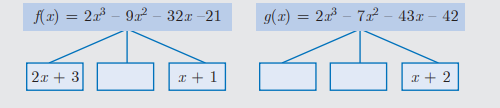
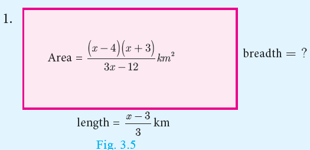
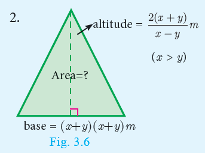
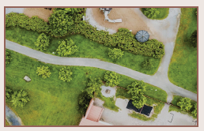
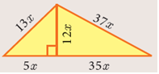
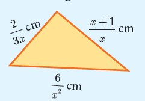
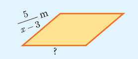
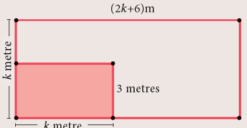
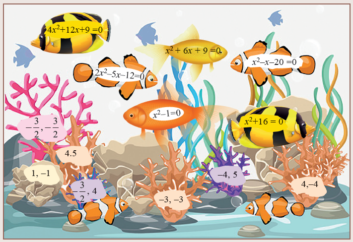
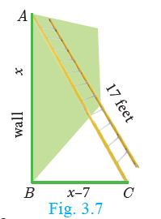

1.Solve the following system of linear equations in three variables
Number 1x plus y plus z equal to 5 comma 2x minus y plus z equal to 9 comma x minus 2y plus 3z equal to 16
(ii)I by x minus 2 by y plus 4 equal to 0 semicolon 1 by y minus 1 by z plus 1 equal to 0 semicolon 2 by z plus 3 by x equal to 14
(iii)x plus 20 equal to 3y by 2 plus 10 equal to 2z plus 5 equal to 110 minus within bracket y plus z
2.Discuss the nature of solutions of the following system of equations
Number 1x plus 2y minus z equal to 6 semicolon minus 3x minus 2y plus 5z equal to minus 12 semicolon x minus 2z equal to 3
(ii)2y plus z equal to 3 within bracket minus x plus 1 semicolon minus x plus 3y minus z equal to minus 4 semicolon 3x plus 2y plus z equal to minus 1 by 2
(iii)y plus z by 4 equal to z plus x by 3 equal to x plus y by 2 semicolon x plus y plus z equal to 27
3.Vani, her father and her grandfather have an average age of 53. One-1 by 2of her grandfather’s age plus one-third of her father’s age plus one fourth of Vani’s age is 65. Four years ago if Vani’s grandfather was four times as old as Vani then how old are they all now?
4.The sum of the digits of a three-digit number is 11. If the digits are reversed, the new number is 46 more than five times the former number. If the hundreds digit plus twice the tens digit is equal to the units digit, then find the original three digit number?
5. There are 12 pieces of five, ten and twenty rupee currencies whose total value is ₹105. When first 2 sorts are interchanged in their numbers its value will be increased by Rupees 20. Find the number of currencies in each sort.
In our previous class we have learnt how to find the GCD (HCF) of second degree and third degree expressions by the method of factorization. Now we shall learn how to find the GCD of the given polynomials by the method of long division.
As discussed in Chapter 2, (Numbers and Sequences) to find GCD of two positive integers using Euclidean Algorithm, similar techniques can be employed for two given polynomials also.
The following procedure gives a systematic way of finding Greatest Common Divisor of two given polynomials f of x and g of x
Step 1: First, divide f of x by g of x to obtainf of x equal to g of x into q of x plus r of x where q of xis the quotient andr of x is the remainder. Then,degree r of x less than degree g of x
Step 2: If the remainder r of x is non-zero, divide g of x by r of x to obtain g of x equal to r of x q1 of x plus r1 of x where r1 of x is the new remainder. Then degree with in bracket r1 of x less than degree r of x. If the remainder r 1 of x is zero, then r of x is the required GCD.
Step 3: If r1 of x is non-zero, then continue the process until we get zero as remainder. The divisor at this stage will be the required GCD.
We write GCD into within bracket f of x comma g of x to denote the GCD of the polynomials f of x comma g of x
If f of x and g of x are two polynomials of same degree, then the polynomial carrying the highest coefficient will be the dividend. In case, if both have the same coefficient then compare the next least degree’s coefficient and proceed with the division. |
1.When two polynomials of same degree has to be divided, dash should be considered to fix the dividend and divisor.
2.If r of x equal to zero when f of x is divided by g of x then g of x is called dash of the polynomials.
3.If f of x equal to g of x q of x plus r of xdash must be added to f of x to make f of x completely divisible by g of x
4.If f of x equal to g of x into q of x plus r of xdash must be subtracted to f of x to make f of x completely divisible by g of x
Find the GCD of the polynomialsx cube plus x square minus x plus 2 and 2x cube minus 5 x square plus 5x minus 3
Solution Let f of x equal to 2x cube minus 5x square plus 5x minus 3andg of x equal to x cube plus x square minus x plus 2
x cube plus x square minus x plus 2 divided by 2x cube minus 5 x square plus 5x minus 3
2x cube plus 2x square minus 2x plus 4 minus within bracket
minus 7x square plus 7 x minus 7
equal to minus 7 into x square minus x plus 1is remainder 2 is quotient
minus 7 into x square minus x plus 1 not equal to zeronote that minus 7 is not a divisor of g of x
Now dividing g of x equal to x cube plus x square minus x plus 2 by the new remainder x square minus x plus 1 (leaving the constant factor), we get
x square minus x plus 1 divided by x cube plus x square minus x plus 2
x cube minus x square plus x within bracket minus
2x square minus 2x plus 2
2x square minus 2x plus within bracket minus zero
Here, we get zero remainder.
Therefore, GCDwithin bracket 2x cube minus 5x square plus 5x minus 3 comma x cube plus x square minus x plus 2) equal to x square minus x plus 1
Find the GCD of6x cube minus 30 x square plus 60 x minus 48 and
3x cube minus 12x square plus 21 x minus 18
Solution Let,f of x equal to 6x cube minus 30x square plus 60 x minus 48 equal to 6 into within bracket x cube minus 5x square plus 10 x minus 8and
g of x equal to 3x cube minus 12x square plus 21x minus 18 equal to 3 into within bracket x cube minus 4x square plus 7x minus 6
Now, we shall find the GCD of x cube minus 5x square plus 10x minus 8 and x cube minus 4x square plus 7x minus 6
x cube minus 5x square plus 10 x minus 8 divided by x cube minus 4x square plus 7x minus 6
x cube minus 5x square plus 10x minus 8 within bracket minus
x square minus 3x plus 2 is remainder 1 is quotient
x square minus 3x plus 2 divided by x cube minus 5x plus 10 x minus 8
x cube minus 3x square plus 2x within bracket minus
minus 2x square plus 8x minus 8
minus 2 x square plus 6x minus 4 within bracket minus
2x minus 4 equal to 2 into x minus 2
x minus 1
x minus 2 divided by x square minus 3x plus 2
x square minus 2x within bracket minus
minus x plus 2
minus x plus 2 within bracket minus Remainder zero
Here, we get zero as remainder
GCD of leading coefficients 3 and 6 is 3.
Thus, GCDwithin bracket 6 x cube minus 30 x square plus 60 x minus 48 comma 3x cube minus 12 x square plus 21 x minus 18 equal to 3 into x minus 2
The Least Common Multiple of two or more algebraic expressions is the expression of highest degree (or power) such that the expressions exactly divide it.
Consider the following simple expressionsa cube b square comma a square b cube
For these expressions LCM equal to a cube into b square .
To find LCM by factorization method
Number 1Each expression is first resolved into its factors.
(ii)The highest power of the factors will be the LCM.
(iii)If the expressions have numerical coefficients, find their LCM.
(iv)The product of the LCM of factors and coefficient is the required LCM.
Find the LCM of the following
Number 1 8x power 4 y square comma 48 x square y power 4
(ii)5x minus 10 comma 5 x square minus 20
(iii)x power 4 minus 1 comma x square minus 2x plus 1
(iv)x cube minus 27 comma x minus 3 whole square comma x square minus 9
Solution
Number 1 8x power 4 y square comma 48 x square y power 4
First let us find the LCM of the numerical coefficients.
That is, LCM (8 , 48) equal to 2 into 2 into 2 into 6 equal 48
Then find the LCM of the terms involving variables.
That is, LCM with in bracket x power 4 y square comma x square y power 4 equal to x power 4 y power 4
Finally find the LCM of the given expression.
We conclude that the LCM of the given expression is the product of the LCM of the numerical coefficient and the LCM of the terms with variables.
Therefore, LCMwithin bracket 8 comma 48 equal to 2 into 2 into 2 into 6 equal to 48
(ii)5x minus 10 comma 5x square minus 20
5x minus 10 equal to 5 into x minus 2
5x square minus 20 equal to 5 into x square minus 4 equal to 5 into x plus2 into x minus
2
Therefore, LCM bracket 5x minus 10 comma 5x square minus 20 equal to 5 into x plus 2 into x minus 2
(iii)x power 4 minus 1 comma x square minus 2x plus 1
x power 4 minus 1 equal to x square whole square minus 1 equal to x square plus 1 into x minus 1
x square minus 2x plus 1 equal to x minus 1 the whole square
Therefore, LCM with in bracket x power 4 minus 1 comma x square minus 2x plus 1 equal to x square plus 1 into x plus 1 into x minus 1 the whole square
Number 4 x cube minus 27 comma x minus 3 comma x square minus 9
x cube minus 27 equal to x minus 3 into x square plus 3 x plus 9 semicolon x minus 3 the whole square equal to x minus 3 whole square semicolon x square minus 9 equal to x plus 3 into x minus 3
Therefore, LCM with in bracket x cube minus 27 comma x minus 3 the whole square comma x square minus 9 equal to x minus 3 the whole square into x plus 3 into x square plus 3x plus 9
Complete the factor tree for the given polynomials f of x and g of x. Hence find their GCD and LCM.

GCD f of x and f of x equal to dash LCM with in bracket f of x and g of x equal to dash
1.Find the GCD of the given polynomials
Number 1x power 4 plus 3x cube minus x minus 3 comma x cube plus x square minus 5x plus 3
(ii)x power 4 minus 1 comma x cube minus 11 x square plus x minus 11
(iii)3x power 4 plus 6x cube minus 12 x square minus 24 x comma 4 x power 4 plus 14 x cube plus 8x square minus 8 x
(iv)3x cube plus 3x square plus 3x plus 3 comma 6x cube plus 12x square plus 6x plus 12
2.Find the LCM of the given expressions.
Number 1 4x square y comma 8 x cube 3 y square
(ii)9a cube b square comma 12 a square b square c
(iii)16 m comma 12m square n square 8n square
(iv)p square minus 3p plus 2 comma p square minus 4
Number 52x square minus 5x minus 3 comma 4x square minus 36
Number 6 2x square minus 3xy whole square comma 4x minus 6y whole cube comma 8x cube minus 27 y cube
Let us consider two numbers 12 and 18.
We observe that,LCM 12 comma 18 equal to 36 comma GCD into 12 comma 18 equal to 6
Now, LCM into 12 comma 18 into GCD into 12 comma 18 equal to 36 into 6 equal to 216 equal to 12 into 18
Thus LCM into GCD is equal to the product of two given numbers.
Similarly, the product of two polynomials is the product of their LCM and GCD, that is,f of x into g of x equal to LCM within bracket f of x comma g of x into GCD with in bracket f of x comma g of x
Considerf of x equal to 12 into x square minus y square g of x equal to 8 into x cub minus y cube
Nowf of x equal to 12 into x square minus y square equal to 2 cube into 3 into x plus y into x minus y Equation 1
Andg of x equal to 8 into x cube minus y cube equal to 2 cube into xminus y into x square plus xy plus y square Equation 2
From Equation 1 and Equation 2 we get,
LCM within bracket f of x comma g of x equal to 2 square into 3 into x plus y into x minusy into x square plus xy plus y square
equal to 24 into x square minus y square x square plus xy plus y square
GCD within bracket f of x comma g of x equal to 22 into x minus y equal to 4 x minus y
LCM into GCD equal to 24 into 4 into x square minus y square into x square plus xy plus y square into x minus y
LCM into GCD equal to 96 into x cube minus y cube into x square minus y square Equation 3
product off of x and g of x equal to 12 into x square minus y square into 8 into x cube minus y cube
equal to 96 x square minus y square into x cube minus y cube Equation 4
From Equation 3 and Equation 4 we obtainLCM into GCD equal to f of x into g of x
Isf of x into g of x into r of x equal to LCM within bracket f of x comma g of x comma r of x into GCD within bracket f of x comma g of x comma r of x
1. Find the LCM and GCD for the following and verify thatf of x into g of x equal to LCM into GCD
Number 121 x square y comma 35 xy square
(ii)x cube minus 1 x plus 1 comma x cube plus 1
(iii)x square y plus x y square comma x square plus xy
Find the LCM of each pair of the following polynomials
Number 1a square plus 4a minus 12 comma a square minus 5a plus 6 GCD a minus 2 whose GCD is a minus 2
(ii)x power 4 minus 27 a cube x comma x minus 3a whole square GCD x minus 3a
3.Find the GCD of each pair of the following polynomials
Number 112 into x power 4 minus x cube comma 8 into x power 4 minus 3 x cube plus 2x square whose LCM is 24 x cube into x minus 1 into x minus 2
4.x cube plus y cube comma x power 4 plus x square y square plus y square whose LCM is x cube plus y cube into x square plus xy plus y square
5.Given the LCM and GCD of the two polynomials p of x and q of x find the unknown polynomial in the following table
S.No. |
LCM |
GCD |
p(x) |
q(x) |
number 1 |
a cube minus a square plus 11 a plus 70 |
a minus 7 |
a square minus 12 a plus 35 |
|
(ii) |
x power 4 minus y power 4 into x power 4 plus x square y square plus y power 4 |
x square minus y square |
|
x power 4minus y power 4 into x sq uare plus y square |
Definition: An expression is called a rational expression if it can be written in the form p of x by q of x wherep of x and q of x are polynomials and q of x not equal to 0. A rational expression is the ratio of two polynomials.
The following are examples of rational expressions.
9 by x comma 2y plus 1 by y square minus 4y plus 9 comma z cube plus 5 by z minus 4 comma a by a plus 10
The rational expressions are applied for describing distance-time, modeling multitask problems, to combine workers or machines to complete a job schedule and much more.
A rational expressionp of x by q of xis said to be in its lowest form ifGCD into p of x comma q of x equal to 1
To reduce a rational expression to its lowest form, follow the given steps
Number 1 Factorize the numerator and the denominator
(ii)If there are common factors in the numerator and denominator, cancel them.
(iii)The resulting expression will be a rational expression in its lowest form.
Reduce the rational expressions to its lowest form
Number 1x minus 3 by x square minus 9
(ii)x square minus 16 by x square plus 8x plus 16
Solution
Number 1x minus 3 by x square minus 9 equal to x minus 3 by x plus 3 into x minus 3 equal to 1 by x plus 3
(ii)x square minus 16 by x square plus 8x plus 16 equal to within bracket x plus 4 into x minus 4 by x plus 4 whole square equal to x minus 4 divided by x plus 4
A value that makes a rational expressionp of x by q of x (in its lowest form) undefined is called an Excluded value.
To find excluded value for a given rational expression in its lowest form, sayp of x by q of x
consider the denominatorq of x equal to 0
For example, the rational expression5 by x minus 10 is undefined when x equal to 10. So, 10 is called an excluded value for5 by x minus 10
Example 3.14 Find the excluded values of the following expressions (if any)
Number 1 x plus 10 by 8x
(ii)7p plus 2 by 8p square plus 13p plus 5
(iii)x by x square plus one
Solution
Number 1x plus 10 by 8x
The expressionx plus 10 by 8x is undefined when8x equal to 0 x equal to 0 Hence the excluded value is 0.
(ii)7p plus two by 8p square plus 13 p plus 5
The expression 7p plus 2 by 8p square plus 13p plus 5 is undefined when 8p square plus 13p plus 5 equal to 0 that is, 8p plus 5 into p plus 1 equal to 0
p equal to -5 by 8 comma p equal to minus 1. The excluded values are
minus 5 by 8 minus 1 and minus 1.
(iii)x by x square plus 1
Herex square greater than or equal to 0for all x. Therefore, x square plus 1 greater than or equal to 0 plus 1 equal to 1.Hence,x square plus 1 not equal to 0 for any x. Therefore, there can be no real excluded values for the given rational expressionx by x square plus 1
1. Arex square minus 1 and tan x equal to sin x by cos x rational expressions?
2. The number of excluded values of x cube plus x square minus 10 x plus 8 by x power 4 plus 8 x square minus 9 is dash.
1.Reduce each of the following rational expressions to its lowest form.
Number 1x square minus 1 by x square plus x
(ii)x square minus 11 x plus 18 by x square minus 4x plus 4
(iii)9 x square plus 81 x by x cube plus 8 x square minus 9 x
(iv)p square minus 3p minus 40 by 2p cube minus 24 p square plus 64 p
2Find the excluded values, if any of the following expressions.
Number 1y by y square plus 25
(ii)t by t square mins 5t plus 6
(iii)x square plus 6x plus 8 by x square plus x minus 2
(iv)x cube minus 27 by x cube plus x square minus 6x
We have studied the concepts of addition, subtraction, multiplication and division of rational numbers in previous classes. Now let us generalize the above for rational expressions.
Multiplication of Rational Expressions
If p of x by q of x andr of x by s of x are two rational expressions whereq of x comma s of x not equal to 0
their product isp of x by q of x into r of x by s of x equal to p of x into r of x by q of x into s of x
In other words, the product of two rational expression is the product of their numerators divided by the product of their denominators and the resulting expression is then reduced to its lowest form.
If p of x by q of x andr of x by s of x are two rational expressions, where then, q of x comma s of x not equal to zero then,
p of x by q of x into root r of x by s of x equal to p of x by q of x into s of x by r of x equal to p of x into s of x by q of x into r of x
Thus, division of one rational expression by other is equivalent to the product of first and reciprocal of the second expression. If the resulting expression is not in its lowest form, then reduce to its lowest form.
Find the unknown expression in the following figure ures.


Number 1Multiplyx cube by 9y square by27 y by x power 5
Multiplyx power 4 into b square by x minus 1 by x square minus 1 by a power 4 into b cube
Solution
Number 1x cube by 9y square into 27 y by x power 5 equal to 3 by x square y
Number 1x power 4 into b square by x minus 1 into x square minus 1 by a power 4 into b cube equal to power 4 into b square by x minus 1 into x plus 1 into x minus 1 by a power 4 into b cube equal to x power 4 into x plus 1 by a power 4 into b
Find
Number1 14 x power 4 by y into root 7x by 3 y power 4
Number 1x square minus 16 by x plus 4 divided by x minus 4 by x plus 4
(ii)16 x square uare minus 2x minus 3 by 3x square uare minus 2x minus 1 divided by 8 x square plus 11x plus 3 by 3x square minus 11 x minus 4
Solution
Number 1 14 x power 4 by y divided by 7x by 3y power 4 equal to 14 x power 4 by y into 3y power 4 by 7x equal to 6x cube y cube
(ii) x square minus 16 by x plus 4 divided by x minus 4 by x plus 4 equal to x plus 4 into x minus 4 by x plus 4 into with in bracket x plus 4 by x minus 4 equal to x plus 4
(iii) 16 x square minus 2x minus 3 by 3x square minus 2x minus 1 divided by 8 x square plus 11 x plus 3 by 3x square minus 11x minus 4 equal to 16 square minus 2x minus 3 by 3x square minus 2 x minus 1 into 3x square minus 11 x minus 4 by 8x square minus 11 x plus 3
equal to 8x plus 3 into 2x minus 1 by 3x plus 1 into x minus 1 into 3x plus 1 into x minus 4 by 8x plus 3 into x plus 1
equal to 2x minus 1 into x minus 4 by x minus 1 into x plus 1 equal to 2 x square minus 9 x plus 4 by x square minus 1
1.Simplify
Number 14 x square y by 2 (z)square into 6xz cube by 20 y power 4
(ii)p square minus 10p plus 21 by p minus 7 into p square plus p minus 12 by 9 minus 3 the whole square
(iii)5t cube by 4t minus 8 into 6t minus 12 by 10 t
2.Simplify
Number 1x plus 4 by 3x plus 4y into 9 x square minus 16 y square by 2x square plus 3x minus 20
(ii)x cube minus y cube by 3x square plus 9xy plus 6y square into x square plus 2xy plus y square by x square minus y square
3.Simplify
Number 12a square uare plus 5a plus 3 by 2a square uare plus 7a plus 6 divided by a square uare plus 6 a plus 5 by minus 5a square uare minus 35a minus 50
(ii)b square uare plus 3b minus 28 by b square uare plus 4b plus 4 divided by b square uare minus 49 by b square uare minus 5b minus 14
Number 1 x plus 2 by 4y divided by x square uare minus x minus 6 by 12 y square uare
(ii) 12t square uare minus 22t plus 8 by 3t divided by 3t square uare plus 2t minus 8 by 2t square uare plus 4t
4.Ifx equal to a square uare plus 3a minus 4 by 3a square uare minus 3 and y equal to a square uare plus 2a minus 8 by 2a square uare minus 2a minus 4 find the value ofx square uare y power minus 2
If a polynomialp of x equal to x square uare minus 5x minus 14 is divided by another polynomial q of x we getx minus 7 by x plus 2 , find q of x
Number 1The length of a rectangular garden is the sum of a number and its reciprocal. The breadth is the difference of the square uare of the same number and its reciprocal. Find the length, breadth and the ratio of the length to the breadth of the rectangle.

(ii)Find the ratio of the perimeter to the area of the given triangle.

Addition and Subtraction of Rational Expressions
Addition and Subtraction of Rational Expressions with Like Denominators
Number 1Add or subtract the numerators
(ii)Write the sum or difference of the numerators found in step number 1 over the common denominator.
(iii)Reduce the resulting rational expression into its lowest form.
Find x square plus 20xplus 36 by x square uare minus 3x minus 28 minus x square plus 12x plus 4 by x square minus 3x minus 28
Solution
x square plus 20x plus 36 by x square minus 3x minus 28 minus x square plus 12x plus 4 by x square minus 3x minus 28 equal to x square plus 20 x plus 36 minus x square plus 12x plus 4 by x square minus 3x minus 28
equal to 8x plus 32 by x square minus 3x minus 28 equal to 8 x plus 4 by x minus 7 into x plus 4 equal to 8 by x minus 7
Addition and Subtraction of Rational Expressions with unlike Denominators
Number 1 Determine the Least Common Multiple of the denominator.
(ii)Rewrite each fraction as an equivalent fraction with the LCM obtained in step number 1. This is done by multiplying both the numerators and denominator of each expression by any factors needed to obtain the LCM.
(iii)Follow the same steps given for doing addition or subtraction of the rational expression with like denominators.
1. Write an expression that represents the perimeter of the figure ure and simplify.  |
2. Find the base of the given parallelogram whose perimeter is  |
Simplify
1 by x square minus 5x plus 6 plus 1 by x square minus 3x plus 2 minus 1 by x square minus 8x plus 15
Solution
1 by x square minus 5x plus 6 plus 1 by x square minus 3x plus 2 minus 1 by x square minus 8x plus 15
equal to 1 by x minus 2 into x minus 3 plus 1 by x minus 2 into x minus 1 minus 1 by x minus 5 into x minus 3
equal to x minus 1 into x minus 5 plus x minus 3 into x minus 5 minus x minus 1 into x minus 2 by x minus 1 into x minus 2 into x minus 3 into x minus 5
equal to x square minus 6x plus 5 plus x square minus 8x plus 15 minus x square minus 3x plus 2 by x minus 1 into x minus 2 into x minus 3 into x minus 5
equal to x square minus 11x plus 18 by x minus 1 into x minus 2 into x minus 3 into x minus 5 equal to x minus 9 into x minus 2 by x minus 1 into x minus 2 into x minus 3 into x minus 5
equal to x minus 9 by xminus 1 into x minus 3 into x minus 5
Say True or False
1.The sum of two rational expressions is always a rational expression.
2.The product of two rational expressions is always a rational expression.
1.Simplify
Number 1 x into x minus 1 by x minus 2 plus x into 1 minus x by x minus 2
(ii)x plus 2 by x plus 3 plus x minus 1 by x minus 2
(iii)x cube plus x minus y plus y cube by y minus x
2.Simplify
Number 1 2x plus 1 into x minus 2 by x minus 4 minus 2x square minus 5x plus 2 by x minus 4
(ii)4x by x square uare minus 1 minus x plus 1 by x minus 1
3.Subtract 1 by x square plus 2 from2x cube plus x square plus 3 by x square plus 2 the whole square
4.Which rational expression should be subtracted fromx square plus 6x plus 8 by x cube plus 8 to get 3 by x cube minus 2x plus 4 IfA equal to 2x plus 1 by 2x minus 1 comma B equal to 2x minus 1 by 2x plus 1 find 1 by A minus B minus 2B minus A square uare minus B Square
If A equal to x by x Plus 1 comma b equal to 1 by x plus 1 prove thatA plus B the whole Square plus A minus B the whole square by A divided by B equal to 2 into x square plus 1 by x into x plus 1 the whole square
5.Pari needs 4 hours to complete a work. His friend Yuvan needs 6 hours to complete the same work. How long will it take to complete if they work together?
6.Iniya bought 50 kg of fruits consisting of apples and bananas. She paid twice as much per kg for the apple as she did for the banana. If Iniya bought Rupees 1800 worth of apples and Rupees 600 worth bananas, then how many kgs of each fruit did she buy?
The square uare root of a given positive real number is another number which when multiplied with itself is the given number.
Similarly, the square root of a given expression pof x is another expression q of x which when multiplied by itself gives p of x, that is, q of x. q of x equal to p of x
So, modulus q of x equal to root of p of x is the absolute value ofmodulus q of x
The following two methods are used to find the square uare root of a given expression
number 1 Factorization method
(ii)Division method
1. Is x square uare plus 4 x plus 4 and so on is a perfect square uare?
2. What is the value of x in 3 root of x equal to 9
3. The square uare root of 361 x power 4 y square uare is dash.
4. root of a square uare x square uare plus 2 a b x plus b square uare equal to dash.
5. If a polynomial is a perfect square uare, then, its factors will be repeated dash number of times (odd / even).
Find the square uare root of the following expressions
Number 1 256 into x minus a the whole power 8 into x minus b power 4 x minus c whole power 16 into x minus d whole power 20
ii) 144 a power 8 b power 12 c power 16 by 81 f power 12 g power 4 h power 14
Solution
Number 1 root of 256 into x minus a power 8 into x minus b power 4 into x minus c power 16 into x minus d power 20 equal to 16 modulus x minus a power 4 into x minus square uare into x minus c power 8 into x minus d power 10
iii) root of 144 a power 8 b power 12 c power 16 by 81f power 12 g power 4 h power 14 equal to 4 by 3 modulus a power 4 b power 6 c power 8 by f power 6 g power 2 h power 7
Find the square root of the following expressions
Number 1 16 x square plus 9 y square uare minus 2xy plus 24x minus 18y plus 9
ii) 6x square plus x minus 1 into 3x square plus 2x minus 1 into 2x square plus 3x plus 1
equal to root 3x minus 1 into 2x plus 1 into 3x minus 1 into x plus 1 into 2x plus 1 into x plus 1 equal to 3x minus 1 into 2x plus 1 into x plus 1
iii) root 15 x square plus within bracket root 3 plus root 10 into x plus root 2 into root 5x square plus within bracket 2 root 5 plus 1 into x plus 2 into root 3 x square plus within bracket root 2 plus 2 into root3 into x plus 2 into root 2
Solution
Number 1 16 x square plus 9 y square minus 24 xy plus 24x minus 18y plus 9
equal to root 4x square plus within bracket minus 3y square plus 3 square plus 2 into 4 x into minus 3y plus 2 into minus 3y into 3 plus 2 into 4x into 3
equal to root 4x minus 3y plus 3 whole square equal to modulus 4x minus 3y plus 3
ii) root of 6x cube plus x minus 1 into 3x square plus 2x minus 1 into 2x square plus 3x plus 1
equal to 3x minus 1 into 2x plus 1 into 3x minus 1 into x plus 1 into 2x plus 1 into x plus 1
iii) First let us factorize the polynomials
root of 15x square plus root of 3 plus root of 10x plus root of 2 equal to root of 15 x square plus root of 3 plus root of 10x plus root of 2
equal to root of 3x into root of 5x plus 1 plus root of 2 into root of 5x plus 1
equal to root of 5x plus 1 into root of 3x plus root of 2
equal to root of 5 x into x plus to plus 1 into x plus to equal to root of 5x plus 1 into x plus 2
root of 3x square plus root of 2 plus 2 root of 3 x plus 2 into root of 2 equal to root of 3 x square plus root of 2x plus 2 root of 3x plus 2 root of 2
equal to x into root of 3x plus root of 2 plus 2 root of 3x plus root of 2 equal to x plus 2 into root 3x plus root 2
Therefore,
root of root 15x square plus root of 3 plus root of 10 into x plus root of 2 into root 5 x square plus 2 into root 5 plus 1 into x plus 2into root3 x square plus root 2 plus 2 root 3 into x plus 2 root 2
equal to root 5x plus 1 into root 3x plus root 2 into root 5x plus 1 into x plus 2 into root3x plus root 2 into x plus 2 equal to modulus root5x plus 1 into root3x plus root into x plus 2
1.Find the square uare root of the following rational expressions.
Number 1 400 x power 4 y power 12 z power 16 by 100x power 8 y power 4 z power 4
(ii)7x square plus 2 root 14 x plus 2 by x square minus 1 by 2 x plus 1 by 16
(iii)121 into a plus b power 8 into x plus y power 8 into b minus c power 8 by 81 into b minus c power 4 into a minus b power 12 into b minus cpower4
2.Find the square uare root of the following
Number 1 4x square plus 20 x plus 25
(ii)9x square minus 24xy plus 30xz minus 40 yz plus 25z square plus 16y square
(iii)4x square minus 9x plus 2 into 7x square minus 13x minus 2 into 28x square minus 3x minus 1
(iv)2x square plus 17 by 6 into x plus 1 into 3 by 2 x square plus 4x plus 2 into 4 by 3 x square plus by 3 into x plus 2
The long division method in finding the square uare root of a polynomial is useful when the degree of the polynomial is higher.
Find the square root of 64 x power 4 minus 16x cube plus 17 x square minus 2x plus 1
Solution
8x square divided by 64 x power 4 minus 16x power3 plus 17 x square minus 2x plus 1
64 x power 4 within bracket minus
16x square minus x divided by minus 16 x cube plus 17 x square
minus 16 x cube plus x square within bracket minus
16x square minus 2x plus 1 divided by 16x square minus 2x plus 1 within bracket minus
zero
Therefore, root of 64 x power 4 minus 16 x cube plus 17 x square minus2x plus 1 equal to modulus 8x square minus x plus 1
Note
Before proceeding to find the square uare root of a polynomial, one has to ensure that the degrees of the variables are in descending or ascending order.
If9x power 4 plus 12x cube plus 28 x square uare plus ax plus b is a perfect square, find the values of a and b.
Solution
3x square divided by 9x power 4 plus 12x cube plus 28 x square plus ax plus b
9x power 4 within bracket minus
6x square plus 2x divided by 12x cube plus 28x square
12x cube plus 28 x square
12x cube plus 4x square uare within bracket minus
6x square plus 4x plus 4 divided by 24x square plus ax plus b
24 x square plus 16x plus 16 within bracket minus zero
Because the given polynomial is a perfect square a minus 16 equal to 0 comma b minus 16 equal to zero
Therefore a equal to 16 comma b equal to 16
1.Find the square root of the following polynomials by division method
Number 1x power 4 minus 12x cube plus 42 x square minus 36 x plus 9
ii) 37 x square minus 28x cube plus 4x power 4 plus 42 x plus 9
iii) 16 x power 4 plus 8x square plus 1
iv) 121 x power 4 minus 198 x cube minus 183 x square plus 216x plus 144
2.Find the values of a and b if the following polynomials are perfect square
Number 14x power 4 minus 12x cube plus 37 x square uare plus b x plus a
ii) ax power 4 plus b x cube plus 361 x square uare plus 220x plus 100
3.Find the values of m and n if the following polynomials are perfect square uares
Number 1 36 x power 4 minus 60 x cube plus 61x square uare minus mx plus n
iii) x power 4 minus 8x cube plus mx square uare plus nx plus 16
Arab mathematician Abraham bar Hiyya Ha-Nasi, often known by the Latin name Savasorda, is famed for his book ‘Liber Embadorum’ published in 1145 AD(CE) which is the first book published in Europe to give the complete solution of a quadratic equation.
For a period of more than three thousand years beginning from early civilizations to current times, humanity knew how to solve a general quadratic equation in terms of its co-efficient by using four arithmetical operations and extraction of roots. This process is called “Solving by Radicals”. Huge amount of research has been carried to this day in solving various types of equations.
An expression of degree n in variable x isa 0 x power n plus a1 x power n minus 1 plus a2 x power n minus 2 plus and so on plus a n minus 1 x plus a n where a0 not equal to 0and a1 comma a2 uptoanare real numbers. Ao comma a1 comma a2 comma uptoan are called coefficients of the expression.
In particular an expression of degree 2 is called a Quadratic Expression which is expressed as p of x equal to ax square uare plus bx plus c comma a is not equal to 0 and a comma b comma c
and a, b, c are real numbers.
Let p of x be a polynomial. x equal to a is called zero of p of x if p of a equal to zero
For example, if p of x equal to x square uare minus 2x min us 8 then p of minus 2 equal to 4 plus 4minus 8 equal to 0 and p of 4 equal to 16 minus 8 minus 8 equal to zero
Therefore minus 2 and 4 are zeros of the polynomialp of x equal to x square uare minus 2x minus 8
Letax square plus bx plus c comma a not equal to zero be a quadratic equation. The values of x such that the expressionax square plus bx plus c becomes zero are called roots of the quadratic equation a x plus b x plus c equal to zero
We have,a x square uare plus b x plus c
a into x square plus b by a into x plus c by a equal to 0
x square plus b by a into x plus c by a equal to 0 since a not equal to 0
x square plus b by 2a into 2x plus b by a whole square uare minus b by 2a whole square plus c by a equal to 0
x square uare plus 2x into b by a plus b by 2a whole square uare equal to b square by 4a square minus c by a
x plus b by 2a whole square equal to b square minus 4 ac by 4a square
x plus b by 2a equal to plus or minus root b square minus 4 ac by 2a
x equal to minus b plus or minus root of b square minus 4 ac by 2a
x equal to minus b plus root of b square minus 4 ac by 2a
Therefore, the roots areminus b plus root of b square minus 4 ac by 2a and minus b minus root of b square minus 4ac by 2a
If alpha and beta are roots of a quadratic equation,ax square plus b x plus c then
alpha equal to minus b plus root of b square minus 4 ac by 2a and beta equal to minus b minus root of b square minus 4ac by 2a
Alpha Also,alpha plus beta equal to minus b plus root of b square minus 4ac minus b minus root of b square minus 4ac by 2a equal to minus b by a
Andalpha into beta equal to minus b plus root of b square minus 4 a c by 2a into minus b minus root of b square minus 4a c by 2a equal to c by a
Since,x minus alpha andx minus beta are factor ofax square plus b x plus c equal to 0
We havex minus alpha into x minus beta equal to 0
Hence, x square minus alpha plus beta into x plus alpha beta equal to 0
That is, x square minus sum of roots into x plus product of roots equal to 0 is the general form of the quadratic equation when the roots are given.
a x square plus b x plus c equal to 0 can equivalently be expressed asx square plus b by a into x plus c by a equal to 0 since a not equal to 0.
Consider a rectangular garden in front of a house, whose dimensions are2k plus 6
metre and k metre. A smaller rectangular portion of the garden of dimensions k metre and 3 metres is leveled. Find the area of the garden, not leveled.

Find the zeroes of the quadratic expression x square pus 8 x plus 12.
Solution
Letp of x equal to x square plus 8x plus 12 equal to x plus 2 into x plus 6
p of minus 2 equal to 4 minus 16 plus 12 equal to 0
p of minus 6 equal to 36 minus 48 plus 12 equal to 0
Therefore minus 2 and minus 6 are zeros of p of x equal to x square plus 8x plus 12
Write down the quadratic equation in general form for which sum, and product of the roots are given below.
Number 1 9 comma14
ii) minus 7 by 2 comma 5 by 2
iii) minus 3 by 5 comma minus 1 by 2
Solution
Number 1 General form of the quadratic equation when the roots are given is x square minus sum of the roots into x plus product of the roots equal to 0 x square minus 9x plus 14 equal to 0
(ii)x square minus 7 by 2 x plus 5 by 2 equal to 0 implies 2x square plus 7x plus 5 equal to 0
(iii)x square minus 3 by 5 into x plus within bracket minus 1 by 2 equal to 0 implies 10x square plus 6x minus 5 by 10 equal to 0
Therefore,10 x 2 plus 6x minus 5 equal to 0
Find the sum and product of the roots for each of the following quadratic equations:
Number 1 x square plus 8x minus 65 equal to 0
ii) 2x square plus 5x plus 7 equal to o
iii) kx square minus k square x minus 2k cube equal to 0x square plus 8x minus 65 equal to 0
Solution
Let a and b be the roots of the given quadratic equation
Number 1a equal to 1 comma b equal to 8 comma c equal to minus 65
alpha plus beta equal to minus b by a equal to minus 8 and alpha beta equal to c by a equal to minus 65
alpha plus beta equal to minus 8 semicolon alpha beta equal to minus 65
ii) 2x square plus 5x plus 7 equal to 0
a equal to 2 comma b equal to 5 comma c equal to 7
alpha plus beta equal to minus b by a equal to minus 5 by 2 and alpha beta equal to c by a equal to 7 by 2
alpha plus beta equal to minus 5 by 2 semicolon alpha beta equal to 7 by 2
iii) kx square minus k square minus 2k cube equal to 0
a equal to k comma b equal to minus k square comma c equal to minus 2k cube
alpha plus beta equal to minus b by a equal to minus into minus k square by k equal to k and alpha beta equal to c by a equal to minus 2k cube by k equal to minus 2k square
1.Determine the quadratic equations, whose sum and product of roots are
Number 1 minus 9 comma 20
ii) 5 by 3 comma 4
iii) minus 3 by 2 comma minus 1
iv) minus into 2 minus athe whole square comma a plus 5 whole square
2.Find the sum and product of the roots for each of the following quadratic equations
i) x square plus 3x minus 28 equal to 0
ii) x square plus 3x equal to 0
iii) 3 plus 1 by a equal to 10 by a square
iv) 3y square minus y minus 4 equal to 0
We have already learnt how to solve linear equations in one, two and three variable(s). Recall that the values of the variables which satisfies a given equation are called its solution(s). In this section, we are going to study three methods of solving quadratic equation, namely factorization method, completing the square method and using formula.
Solving a quadratic equation by factorization method.
We follow the steps provided below to solve a quadratic equation through factorization method.
Step 1: Write the equation in general form a x square plus b x plus c equal to 0
Step 2: By splitting the middle term, factorize the given equation.
Step 3: After factorizing, the given quadratic equation can be written as product of two linear factors.
Step 4: Equate each linear factor to zero and solve for x.
These values of x gives the roots of the equation.
Solve2x square minus 2 root of 6x plus 3 equal to 0
Solution2x square minus 2 root of 6x plus 3 equal to 2x square minus root of 6x minus root of 6x plus 3 by splitting the middle term
5equal to root 2 x into root x minus root 3 minus root 3 into root 2x minus root 3 equal to root of x minus root 3 into root x minus root 3
Now, equating the factors to zero we get,
root 2 x minus root 3 into root x minus root 3 equal to 0
root 2 x minus root 3 whole square equal to zero
root 2x minus root 3 equal to 0
Therefore, the solution isx equal to root 3 by root 2
Solve 2m square plus 19 m plus 30 equal to 0
Solution2m square plus 19m plus 30 equal to 2m square plus 4m plus 15m plus 30 equal to 2m into m plus 2 plus 15 into m plus 2
equal to m plus 2 into 2m plus 15
Equating the factors to zero we get,
m plus 2 into 2m plus 15 equal to 0
m plus 2 equal to 0 implies m equal to minus 2 or 2m plus 15 equal to 0 we get, equal to minus 15 by 2
Therefore, the roots are minus 2 comma minus 15 by 2
Some equations which are not quadratic can be solved by reducing them to quadratic equations by suitable substitutions. Such examples are illustrated below.
Solvex power 4 minus 13x square plus 42 equal to 0
Solution Letx square equal to aThen,x square whole square minus 13 x square plus 13 x square plus 42 equal to a square minus 13 a plus 42 equal to a minus 7 into a minus 6
Given,a minus 7 into a minus 6 equal to 0 we get, a equal to 7 or 6
Since a equal to x square comma x square equal to 7 then,x equal to plus or minus root of 7 or x square equal to 6 we get x equal to plus or minus root 6
Therefore, the roots are x equal to plus or minus root 7 comma plus or minus root 6
Solvex by x minus 1 plus x minus 1 by x equal to 2 into 1 by 2
Solution Lety equal to x by x minus 1 then 1 by y equal to x minus 1 by x
Therefore, x by x minus 1 plus x minus 1 by x equal to 2into 1 by 2 becomesy plus 1 by y equal to 5 by 2
2y square minus 5y plus 2 equal to 0 theny equal to 1 by 2 comma 2
x by x minus 1 equal to 1 by 2 we get, 2x equal to x minus 1 implies x equal to minus 1
x by x minus 1 equal to 1 by 2 we get, x equal to 2x minus 2 implies x equal to 2
Therefore, the roots are x equal to minus 1 comma 2
1.Solve the following quadratic equations by factorization method
Number 1 4x square minus 7x minus 2 equal to 0
ii) 3 into p square minus 6 equal to p into p plus 5
iii) root a into a minus 7 equal to 3 into root 2
iv) root 2 into x square plus 7 x plus 5 root 2 equal to 0
v) 2 x square minus x plus I by 8 equal to 0
The number of volleyball games that must be scheduled in a league with n teams is given byG of n equal to n square minus n by 2 where each team plays with every other team exactly once. A league schedules 15 games. How many teams are in the league?
In deriving the formula for the roots of a quadratic equation we used completing the square s method. The same technique can be applied in solving any given quadratic equation through the following steps.
Step 1: Write the quadratic equation in general forma x square plus b b x plus c equal to 0
Step 2: Divide both sides of the equation by the coefficient of x square if it is not 1.
Step 3: Shift the constant term to the right-hand side.
Step 4: Add the square of one-1 by 2of the coefficient of x to both sides.
Step 5: Write the left-hand side as a square and simplify the right-hand side.
Step 6: Take the square root on both sides and solve for x.
Solvex square minus 3x minus 2 equal to 0
Solution x square minus 3x minus 2 equal to 0
x square minus 3x equal to 2
(Shifting the Constant to RHS)
x square minus 3x plus 3 by 2 whole 2 equal to 2 plus 3 by 2 whole square add modulus 1 by 2 (co efficient of x whole square to both sides)
x minus 3 by 2 whole square equal to 17 by 4 (Writing the LHS as complete square )
x minus 3 by 2 equal to plus or minus root of 17 by 2 (Taking the square root on both sides)
x equal to 3 by 2 plus root of 17 by 2 or x equal to 3 by 2 minus root 17 by 2
x equal to 3 plus root of 17 by 2 comma 3 minus root 17 by 2
Solve 2x square minus x minus 1 equal to 0
Solution 2x square minus x minus 1 equal to 0
x square minus x by 2 minus 1 by 2 equal to 0 (2 make co-efficient of x2 as 1)
x square minus x by 2 equal to 1 by 2
x square minus x by 2 plus 1 by 4 whole square equal to 1 by 2 plus 1 by 4 whole square
x minus 1 by 4 whole square equal to 9 by 16 equal to 3 by 4 whole square
x minus 1 by 4 equal plus or minus 3 by 4 implies x equal to 1 comma minus 1 by 2
The formula for finding roots of a quadratic equation a x square plus b x plus c equal to 0
(derivation given in section 3.6.2) isx equal to minus b plus or minus root of b square minus 4 ac by 2 a
The formula for finding roots of a quadratic equation was known to Ancient Babylonians, though not in a form as we derived. They found the roots by creating the steps as a verse, which is a common practice at their times. Babylonians used quadratic equations for deciding to choose the dimensions of their land for agriculture.
Solve x square plus 2x minus 2 equal to 0 by formula method
Solution Comparex square plus 2x minus 2 equal to 0 a x square uare plus bx plus c equal to 0
with the standard form a x square plus b x plus c equal to 0
a equal to 1 comma b equal to 2 comma c equal to minus 2
x equal to minus b plus or minus root of b square minus 4 ac by 2 a
substituting the values of a, b and c in the formula we get,
x equal to minus plus or minus root 2 square minus 4 into 1 into minus 2 by 2 into 1 equal to minus 2 plus or minus root 12 by 2 equal to minus 1 plus or minus root 3
Therefore,x equal to minus 1 plus root 3 comma minus 1 minus root 3
Solve 2x square minus 3x minus 3 equal to 0 by formula method.
Solution Compare 2x square minus 3x minus 3 equal to 0 with the standard formax square plus b x plus c equal to 0
a equal to 2 comma b equal to minus 3 comma c equal to minus 3
x equal to minus b plus or minus root b square minus 4 a c by 2a
substituting the values of a, b and c in the formula we get,
x equal to minus into minus 3 plus or minus root of minus 3 square minus 4 into 2 minus 3by 2 into 2 equal to 3 plus or minus root 33 by 4
Therefore, x equal to 3 plus or minus root 33 by 4 comma 3 minus root 33 by 4
Solve3p square plus 2 root 5 p minus 5 equal to 0 by formula method.
Solution
Compare 3p square plus 2 root 5 p minus 5 equal to 0with the Standard form ax square plus bx plus c equal to 0
a equal to 3 comma b equal to 2 root 5 comma c equal to minus 5
p equal to minus b plus or minus root b square minus 4 a c by 2a
substituting the values of a, b and c in the formula we get,
p equal to minus 2root 5 plus or minus root 2 root 5square minus 4 into 3 into minus 5 by 2 into 3 equal to minus 2 root 5 plus or minus root 80 by 6 equal to minus root 5 plus or minus 2 root 5 by 3
Therefore, x equal to root 5 by 3 comma minus root 5
Solve pq x square minus p plus q whole square x plus p plus q whole square equal to 0
Solution Compare the coefficients of the given equation with the standard form a x square plus b x plus c equal to zero
a equal to p q comma b equal to minus p plus q whole square comma c equal to p plus q whole square
substituting the values of a, b and c in the formula we get,
x equal to minus into minus p plus q whole square plus or minus root of minus p plus q square whole square minus 4 into p q into p plus q whole square by 2 p q
equal to p plus q whole square plus or minus root of p plus q power 4 minus 4 into p q into p plus q whole square by 2 p q
equal to p plus q whole square plus or minus root p plus q whole square into p plus q whole square minus 4 p q by 2 p q
equal to p plus q whole square plus or minus root p plus q whole square into p square plus q square plus 2 p q minus 4 p q by 2 p q
equal to p plus q whole square plus or minus root p plus q whole square into p minus q whole square by 2p q
equal to p plus q whole square plus or minus p plus q into p minus q equal to p plus q into within bracket p plus q plus or minus p minus q by 2 p q
Therefore,x equal to p plus q by 2 p q into 2 p comma p plus q by 2 p q into 2 q we get x equal to p plus q by q comma p plus q by p
Activity 3
Serve the fishes (Equations) with its appropriate food (roots). Identify a fish which cannot be served?

1.Solve the following quadratic equations by completing the square method
Number 1 9 x square minus 12x plus 4 equal to 0
ii) 5x plus 7 by x minus 1 equal to 3x plus 2
2.Solve the following quadratic equations by formula method
Number 1 2 x square minus 5x plus 2 equal to 0
ii) root 2 f square minus 6 f plus 3 root 2 equal to 0
iii) 3 y square minus 20 y minus 23 equal to 0
iv) 36 y square minus 12 a y plus a square minus b square equal to 0
A ball rolls down a slope and travels a distanced equal to t square minus 0 point seven five
3. feet in t seconds. Find the time when the distance travelled by the ball is 11 point two five feet.
Steps to solve a problem
Step 1: Convert the word problem to a quadratic equation form
Step 2: Solve the quadratic equation obtained in any one of the above three methods.
Step 3: Relate the mathematical solution obtained to the statement asked in the question.
The product of Kumaran’s age (in years) two years ago and his age four years from now is one more than twice his present age. What is his present age?
Solution Let the present age of Kumaran be x years.
Two years ago, his age equal to x minus 2 years.
Four years from now, his age = ) years.
Given, x minus 2 into x plus 4 equal to 1 plus 2 x
x square plus 2x minus 8 equal to 1 plus 2x implies x minus 3 into x plus 3 equal to 0 then, x equal to plus or minus 3
Therefore, x equal to 3 (Rejecting 3 as age cannot be negative)
Kamran’s present age is 3 years.
A ladder 17 feet long is leaning against a wall. If the ladder, vertical wall and the floor from the bottom of the wall to the ladder form a right triangle, find the height of the wall where the top of the ladder meets if the distance between bottom of the wall to bottom of the ladder is 7 feet less than the height of the wall?

Solution Let the height of the wall A B equal to x feet
As per the given data BC equal to x minus 7 feet
In the right triangle ABC, AC equal to 17 , BC equal to x minus 7 feet
By Pythagoras theorem, AC square equal to AB square plus BC square
17 square equal to x square plus x minus 7 whole square semicolon 289 equal to x square plus x square minus 14 x plus 49
x square minus 7x minus 120 equal to 0
Hence, x minus 15 into x plus 8 equal to 0 then, x equal to 15 within bracket or minus 8
Therefore, height of the wallAB equal to 15 ft
(Rejecting minus 8 as height cannot be negative)
A flock of swans contained x squarte members. As the clouds gathered, 10x went to a lake and one-eighth of the members flew away to a garden. The remaining three pairs played about in the water. How many swans were there in total?
Solution As given there are x square swans.
As per the given datax square minus 10 x minus 1 by 8 x square equal to 6 we get,7x square minus 80 x minus 48 equal to 0
x equal to minus b plus or minus root b square minus 4 a c by 2a equal to 80 plus or minus root 6400 minus 4 into 7 into minus 48 by 14 equal to 80 plus or minus 88 by 14
Therefore,x equal to minus 4 by 7.
Herex equal to 12is not possible as the number of swans cannot be negative. Hence, x equal to 12. Therefore, total number of swans is x square equal to 144
A passenger train takes 1 hour more than an express train to travel a distance of 240 km from Chennai to Virudhachalam. The speed of passenger train is less than that of an express train by 20 km per hour. Find the average speed of both the trains.
Solution Let the average speed of passenger train be x km per hour.
Then the average speed of express train will bex plus 20 km per hour
Time taken by the passenger train to cover distance of 240 km equal to 240 by x hour
Time taken by express train to cover distance of 240 km equal to 240 by x plus 20 plus 1
Given,240 by x equal to 240 by x plus 20 plus 1
240 into with in bracket 1 by x minus 1 by x plus 20 equal to 1 implies 240 into within bracket x plus 20 minus x by x into x plus 20 equal to 1 we get, 4800 equal to x square plus 20x
x square plus 20x minus 4800 equal to 0 implies x plus 80 into x minus 60 equal to 0 we get, x equal to minus 80 or 60
Thereforex equal to 60 (Rejecting minus 80 as speed cannot be negative)
Average speed of the passenger train is60 km per hour
Average speed of the express train is 80 km per hour
If the difference between a number and its reciprocal is 24 by 5, find the number.
A garden measuring 12m by 16m is to have a pedestrian pathway that is ‘w’ meters wide installed all the way around so that it increases the total area to 285 m square . What is the width of the pathway?
1.A bus covers a distance of 90 km at a uniform speed. Had the speed been 15 km per hour more it would have taken 30 minutes less for the journey. Find the original speed of the bus.
2.A girl is twice as old as her sister. Five years hence, the product of their ages (in years) will be 375. Find their present ages.
3.A pole has to be erected at a point on the boundary of a circular ground of diameter 20 m in such a way that the difference of its distances from two diametrically opposite fixed gates P and Q on the boundary is 4 m. Is it possible to do so? If answer is yes at what distance from the two gates should the pole be erected?
4.From a group of 2 x square black bees, square root of 1 by 2of the group went to a tree. Again eight-ninth of the bees went to the same tree. The remaining two got caught up in a fragrant lotus. How many bees were there in total?
5.Music has been played in two opposite galleries with certain group of people. In the first gallery a group of 4 singers were singing and in the second gallery 9 singers were singing. The two galleries are separated by the distance of 70 m. Where should a person stand for hearing the same intensity of the singers voice? (Hint: The ratio of the sound intensity is equal to the square of the ratio of their corresponding distances).
6.There is a square field whose side is 10 meter. A square flower bed is prepared in its center leaving a gravel path all-round the flower bed. The total cost of laying the flower bed and gravelling the path at Rupees 3 and Rupees 4 per square meter respectively is Rupees 364. Find the width of the gravel path.
7.The hypotenuse of a right-angled triangle is 25 cm and its perimeter 56 centimeter. Find the length of the smallest side.
The roots of the quadratic equationax square plus bx plus c equal to 0 a not equal to 0
are found using the formulax equal to minus b plus or minus root b square minus 4 a c by 2a. Here, b square minus 4 a c called as the discriminant (which is denoted by ∆ ) of the quadratic equation, decides the nature of roots as follows
Values of Discriminant delta equal to b square minus 4 a c |
Nature of Roots |
delta greater than 0 |
Real and Unequal roots |
delta equal to 0 |
Real and Equal roots |
delta less than 0 |
No Real root |
Determine the nature of roots for the following quadratic equations
Number 1 x square minus x minus 20 equal to 0
(ii)9 x square minus 24 x plus 16 equal to 0
(iii)2x square minus 2x plus 9 equal to 0
Solution
Number 1 x square minus x minus 20 equal to 0
Here, a equal to 1 comma b equal to minus 1comma c equal to minus 20
Now, delta equal to b square minus 4 a c
delta equal to minus 1 square minus 4 into 1 into minus 20 equal to 81
Here, delta equal to 81 less than 0.So, the equation will have real and unequal roots
Number 1 9 x square minus 24 x plus 16 equal to 0
Here, a equal to 9 comma b equal to minus 24 comma c equal to 16
Now, delta equal to b square minus 4 a c equal to minus 24 square minus 4 into 9 into 16 equal to 0
Here, delta equal to 0. So, the equation will have real and equal roots.
Number 1 2x square minus 2 x plus 9 equal to 0
Here, a equal to 2 comma b equal to minus 2 comma c equal to 9
Now, delta equal to b square minus 4 a c equal to minus 2 square minus 4 into 2 into 9 equal to minus 68
Here, delta equal to minus 68 lessthan 0. So, the equation will have no real roots.
Number 1 Find the values of k, for which the quadratic equation kx square minus 8k plus 1 into x plus 81 equal to 0 has real and equal roots?
(ii)Find the values of ‘k’ such that quadratic equation k plus 9 into x square plus k plus 1 into x plus 1 equal to 0 has no real roots?
Solution
Number 1 Kx square minus 8k plus 1 into x plus 81 equal to 0
Since the equation has real and equal roots, delta equal to 0.
That is, b square minus 4 a c equal to 0
Here, a equal to k comma b equal to minus 8 k plus 4 comma c equal to 81
That is,minus 8 k plus 4 whole square minus 4 into k into 81 equal to zero
64k square plus 64k plus 16 minus 324k equal to 0
64 k square minus 260k plus 16 equal to 0
Dividing by 4 we get, 16 k minus 1 into k minus 4 equal to 0 implies k equal to 1 by 16 or k equal to 4
Number 1k plus 9 into x square plus k plus 1 into x plus 1 equal to 0
Since the equation has no real roots, delta less than 0
That is,b square minus 4 a c less than 0
Here, a equal to k plus 9 comma b equal to k plus 1 comma c equal to
That is,k plus 1 whole square minus 4 into k plus 9 into 1 less than 0
k plus 1 whole square minus 4 into k plus 9 into 1 less than 0
k square plus 2 k plus 1 minus 4 k minus 36 less than 0
k square minus 2k minus 35 less than 0
k plus 5 into k minus 7 less than 0
Therefore,minus 5 less than k less than 7 if alpha less than beta and if x minus alpha into x minus beta less than 0, alpha less than x less than beta
Prove that the equation x square into p square plus q square plus 2 into x pr plus qs plus r square plus s square equal to 0
has no real roots. Ifps equal to qr, then show that the roots are real and equal.
The given quadratic equation is, x square into p square plus q square plus 2 x into pr plus qs plus r square plus square equal to 0
Here,a equal to p square plus q square comma b equal to 2 into pq plus qs comma r square plus s square
Now, delta equal to b square minus 4 a c equal to 2 into pr plus qs whole square minus 4 into p square plus q square into r square plus s square
4 into p square into r square plus 2pqrs plus q square s square plus p square s square minus p square rsquare minuspsquare s square minus qsquare rsquare minus square s square
equal to 4 into minus p square s square plus 2 p q r s minus q square r square equal to minus 4 into ps minus qr square less than 0 Equation 1
since delta equal to b square minus 4 a c less than 0
If ps equal to qr then, delta equal to minus 4 into ps minusquare r whole sq uare equal to minus 4 into qr minus qr whole square equal to 0(Using Equation 1)
Thus,delta equal to if ps equal to qr and so the roots will be real and equal.
1.Determine the nature of the roots for the following quadratic equations
Number 1 15 x square plus 11 x plus 2 equal to 0
(ii)x square minus x minus 1 equal to 0
(iii)root 2t square minus 3 t plus 3 root 2 equal to 0
(iv)9 y square minus 6 root 2 y plus 2 equal to 0
Number 5 9 a square into b square into x square minus 24 a b c d x plus 16 c square d square equal to 0 comma a not equal to 0 comma not equal to 0
2.Find the value(s) of ‘k’ for which the roots of the following equations are real and equal.
Number 1 5k minus 6 whole square plus 2k xplus 1
(ii)K x square plus 6k plus 2 into x plus 16
3.If the roots ofa minus b into x square plus b minus c into x plus c minus a equal to 0
are real and equal, then prove that b, a, c are in arithmetic progression.
4.If a, b are real then show that the roots of the equation a minus b x square minus 6 into a plus b into x minus 9 into a minus b equal to 0are real and unequal.
5. If the roots of the equation c square minus ab into x square minus 2 into a square minus b c into x plus b square minus 4 c equal to 0are real and equal prove that either a equal to 0 within bracket or a cube plus b cube plus c cube equal to 3abc
Fill in the empty box in each of the given expression so that the resulting quadratic polynomial becomes a perfect square .
Number 1 X square plus 14 x plus emptybox
(ii)X square minus 24x plus emptybox
(iii)P square plus 2pq plus emptybox
Let a and b are the roots of the equation a x square plus bx plus c equal to 0then,
alpha equal to minus b plus root of b square minus 4 ac by 2a comma beta equal to minus b minus root of b square minus 4 a c by 2a
From 3.6.3, we get
alpha plus beta equal to minus b by a equal to minus coefficient of x by Coefficient of x square semicolon
alpha into beta equal to c by a equal to Constant term by coefficient of x square
Quadratic equation |
Roots of quadratic quation Alpha and beta |
co-efficients of x square comma x and constants |
Sum of Roots alpha into beta |
Product of roots alpha into beta |
minus b by a |
c by a
|
Conclusion |
4 x square minus 9x plus 2 equal to 0 |
|
|
|
|
|
|
|
x minus 4 by 5 whole square equal to 0 |
|
|
|
|
|
|
|
2x square minus 15x minus 27 equal to 0 |
|
|
|
|
|
|
|
If the difference between the roots of the equation x square minus 13x plus k equal to0
is 17 find k.
Solution x square minus 13x plus k equal to 0 here, a equal to 1 comma b equal to minus 13 comma c equal to k
Let, b alpha comma beta the roots of the equation. Then
alpha plus beta equal to minus b by a equal to minus into minus 13 by 1 equal to 13.Equation 1
alpha minus beta equal to 17Equation 2
On Adding Equation 1 and 2 we get,
2a equal to 30 implies a equal to 15
Therefore, 15 plus beta equal to 13 from equation 1 implies beta equal to minus 2
But alpha into beta equal c by a equal to k by 1 implies 15 into minus 2 equal to k we get k equal to minus 30
If the constant term ofax square plus bx plus cequal to 0 is zero, then the sum and product of roots are dash and dash
If alpha and beta are the roots of x square plus 7x plus 10 equal to 0find the values of
Number 1alpha minus beat
(ii)alpha square plus beta square
(iii)alpha cube minus beta cube
(iv)alpha power 4 plus beta power 4
Number 5 alpha by beta plus beta by alpha
Number 6 alpha square by beta plus beta square by a
Solution
x square plus 7x plus 10 equal to 0 here a equal to 1 comma b equal to 7 comma c equal to 10
If alpha and beta are roots of the equation then,
alpha plus beta equal to minus b by a equal to minus 7 by 1 semicolon alpha beta equal to c by a equal to 10 by 1 equal to 10
number 1 alpha minus beta root a plus beta square minus 4 into alpha into beta equal to root os minus 7 square minus 4 into 10 equal to root 9 equal 3
(ii)alpha square plus beta square equal to alpha plus beta square minus 2 alpha into beta equal to minus 7 square minus 2 into 10 equal to 29
(iii)alpha cube minus beta cube equal to plus 3 alpha into beta into minus alpha minus beta equal to 3 cube plus 3 into 10 into 3 equal to 117
(iV)alpha power 4 plus beta power 4 equal to alpha square plus beta square whole square minus 2 alpha square into beta square equal to 29 square minus 2 into 10 square equal to 641 from no 2 comma alpha square plus beta square equal to 29
Number 5 alpha by beta plus beta by alpha equal to alpha square plus beta square by alpha beta equal to alpha plus beat whole square minus 2 alpha beta by alpha into beta equal to 49 minus 20 by 10 equal to 20 by 10
Number 6 alpha square by beta plus beta square by alpha equal to alpha cube plus beta cube by alpha into beta equal to alpha plus beta whole cube minus 3 alpha into beta into alpha plus beta by alpha into beta
equal to minus 343 minus 10 into minus 7 by 10 equal to minus 343 plus 210 by 10 equal to minus 133 by 10